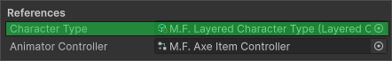
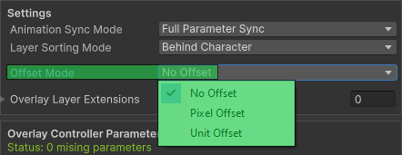

Character Overlay Layer Configuration
This page explains how to create and configure a Character Overlay Layer asset.
Overlay Layers let you add additional visual elements to a character. They can be used for equipement, visual effects, accessories, or any other visuals that need extra functionality or need to be animated separately from the character.
Not sure what a Character Overlay Layer is?
Read More → Character Overlay Layers
Quick Setup Overview
A typical workflow for configuring an overlay layer looks like this:
- Create the Overlay Layer asset
- Assign a Character Type asset
- Assign an Animator Controller (Optional)
- Choose the appropriate Animation Sync Mode
- Set the Layer Sorting Mode
- Adjust Offsets if the overlay does not line up correctly
- Add any Overlay Layer Extensions if additional logic is required
Creating an Overlay Layer
To create a new Overlay Layer asset:
Right clickthe Project window- Navigate to: Create > BlazerTech > Character Management System > Character Overlay Layers

Overlay Layer Setup
Character Type
Assign the Character Type asset that this Overlay Layer will be used with.

Overlay Layers are tied to a specific Character Type so the system knows which characters the Overlay Layer is compatible with.
Note
Overlay Layers can only be used with their assigned Character Type.
Animator Controller (Optional)
Assign the Animator Controller used to animate the Overlay Layer.

Overlay Layers use their own Animator Controller, separate from the controlled used by the character itself.
This controller can:
- Play its own independant animations
- Synchronize paramters with the characters Animator Controller
- Combine both approaches
How the controller behaves depends on the Animation Sync Mode selected.
Animation Sync Mode
Determines whether the Overlay Layer Animator Controller synchronizes parameters with the Character Type Animator Controller.
Full Parameter Sync
All parameters in the Overlay Layer Animator Controller are synchronized with the parameters in the Character Type Animator Controller.
This mode assumes both controllers contain the same parameters with identical names and types.

When this mode is selected, a new section appears in the inspector called:
Overlay Layer Parameter Validation
This section compares the two Animator Controllers and checks whether the Overlay Controller is missing any paramters required for synchronization.

If any paramters are not included in the Overlay Controller at runtime, an error will be thrown for each missing parameter.
Partial Parameter Sync
Only selected parameters are synchronized between the two Animator Controllers.

When this mode is selected, a new section appears in the inspector called:
Overlay Controller Synced Parameters
This section lists all parameters found in the Character Type Animator Controller.
Paramters can be enabled if a parameter with the same name and type exist in the Overlay Layer Animator Controller.
If the parameter does not exist in the Overlay Controller, the parameter cannot be enabled and a notice will be displayed.

Not Synced
The Overlay Layer Animator Controller runs completely independently from the character.

This mode is great for visual elements that need to play their own animations and don't care about the state of the character.
Layer Sorting Mode
Determines how the Overlay Layer is rendered in relation to the Character.

In Front of Character
The Overlay Layer is rendered in front of the character.
This is typically used for things like:
- Weapons
- Held objects
- Damage/Health Indicators
Behind Character
The Overlay Layer is rendered behind the character.
This is useful for things like:
- Back-mounted equipement
- Capes
- Wings
Offset Mode
Sometimes the Overlay Layer might not line up correctly with the character sprite.
Offsets allow you to manually adjust its position.

The Offset Mode determines how the offset values are interpreted.
- Pixel Offset - Applies the offset in pixels, which are converted to Unity Units at runtime.
- Unit Offset - Applies the offset directly in Unity World Units.
Next Steps
Learn how to apply an Overlay Layer to a character at runtime.
Read More → Character Overlay Layer UsageLearn how to extend Overlay Layers with custom behavior
Read More → Character Overlay Layer Extensions